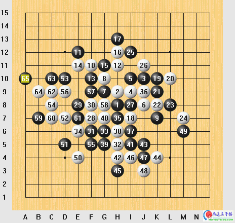
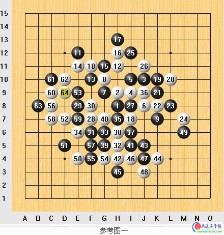
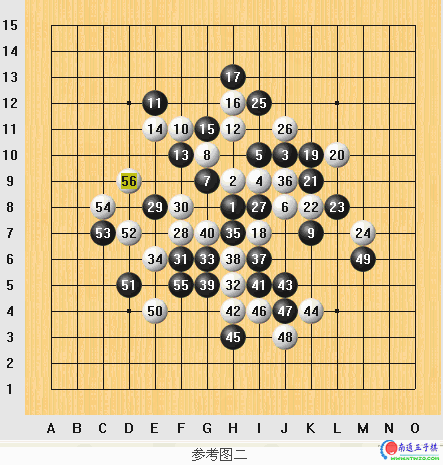
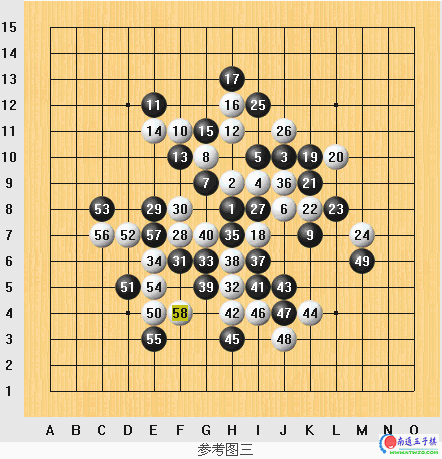
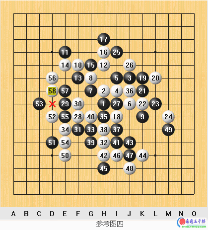

06年浙江赛A组赛与吴镝的一盘棋
#1 06年浙江赛A组赛与吴镝的一盘棋 作者：有志青年 发表时间：2007-3-14 17:10:36

实战图
这是本次比赛第7轮比赛，前6轮比赛拿到4.5分与吴镝并列A组第二，并且在上一轮刚干掉朱建锋。这结果对于赛前被普遍认为是降组大热门的我来说很满意了，既然保组已经无忧，当然就要争取到更好的名次，也由于此前对他的战绩是两战两败,输的原因让我很不甘心，所以这轮比赛我很想赢下来。
蓝鲸（吴的网名）开局疏星，现在的研究认为白棋优势所以我当然不换，两打选择实战打点，因为在网上下这个打点比较多，相对熟悉一些，到第8手都是最强定式走法。这时候他开始考虑，看来I8这个最强点他不会去走，这让我心里很高兴，他不了解我对这个打点变化的熟悉程度，其他走法即便不必胜也是我控制局面。实战果然选择K7的变化，这是第三届全国赛蔡力杰对黄圣明的对局中下出来的，10手活三拓展，11必然，12！关键的一手，以前曾研究12手走在13位，不过近几年研究表明那个局面无法胜，而且无法控制黑在右面的优势所以现在流行实战12手的走法。此后到24手一路的最强变化。25，27黑棋开始侵消白的优势，28手白棋吹响反击的号角，29！很强的防守，封住白棋局部可能的借用线路，30无奈，31必然。这时我心里很急，必须把平静的湖水搅浑才有机会。32飘逸但比较抽象的拓展手段，期待对手犯错，但黑33到45手非常稳健，我绝望的想这盘棋要和了。不过这时候我突然发现了一些有趣的东西。。。。我把右下交换干净后，50！白棋有阴谋的一手，51预料之中的棋！这时候我非常兴奋的下出52！，他看我走完52以为我只是单纯要他的四四禁手，不过随着他深入计算发现了这个52的奇妙之处：）看到蓝鲸当时痛苦的表情，笑容在我脸上绽放着。（具体变化见参考图）他计算30分钟后53！，我的脸从红润瞬间变青。。他下出了这个局面的唯一防，计算相当精准，后面草草应付几手后我极不情愿的提出和棋，他也欣然同意。
随后由于客观因素对我有利而幸运压过蓝鲸夺本次赛事冠军，但蓝鲸表现出的敬业精神和实力都无愧于中国顶尖棋手之一的美名。



